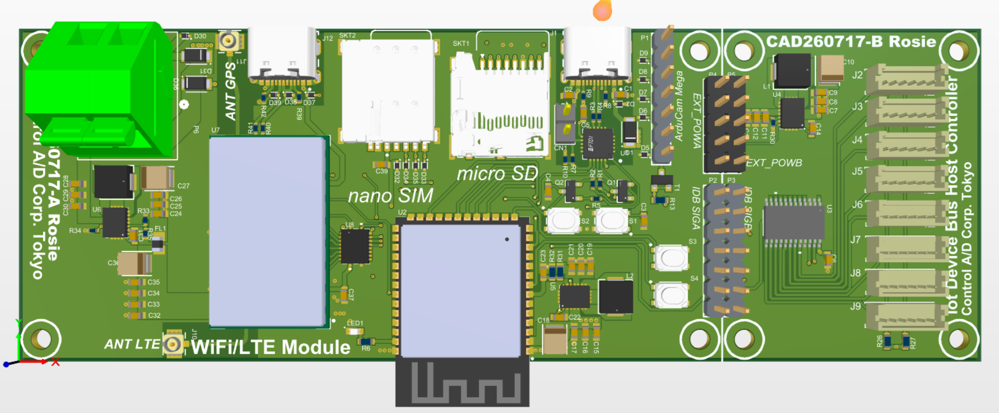

Rocket-starting solutions for global social challenges
with an intuitive, open-edge infrastructure for everyone.
The market demands instant system deployment in harsh environments lacking power and infrastructure. Reality falls short.
Current IoT system development relies on piecing together amateur-level components.
Sensors connected to embedded systems frequently use hobbyist boards like Raspberry Pi or Arduino without industrial reliability.
Building a professional-grade environment rapidly is an urgent necessity.
Development time consumed by custom per-sensor driver coding and wasteful protocol handling.
Traditional polling architectures drain batteries, making multi-year uncrewed operation impossible.
True IoT devices must operate on ultra-low power, enabling continuous multi-year operation on battery power.
Standardization focuses solely on the core "Envelope" (Header), allowing vendors to freely localize internal payloads. Fixed-length TLV formatting delivers maximum adoption flexibility.
16-byte fixed header auto-recognition while granting vendors complete freedom to customize payload schemas. Eliminates rigid, over-engineered standard friction—Pragmatic Plug & Play.
Dedicated interrupt line and individual power gating enable 100% Event-Driven execution, eliminating idle power waste.

Universal Reference Kit
A Board [ESP32-S3 + SimCom SIM76270G] + B Board [Small UniversalIotBus (UIB) 8-port]
Eliminating per-market board redesign costs with the Universal Reference Kit.
We designed low-cost evaluation kits to immediately realize UniversalIotBus (UIB): Board A (right) focused purely on IoT connectivity, and Board B (left) consolidating core bus elements.
In mission-critical uncrewed deployments, unexpected device freezing is the single greatest risk.
To mitigate this risk, we implemented self-diagnostic and notification features optimized for low-power operation.
On communication fault, power is forcibly gated to isolate faulty nodes. Keeps the system operational without full system crashes—Mission-Critical Resilience.
Interrupt Latency
Measured avg 88.5ms
Cold Start Time
Fast resume optimized
Stress Test Success
19-burst auto-recovery
Standby Current
100% Event-Driven
The major bottleneck in IoT development is the massive engineering effort required from prototyping to mass production.
We proactively leverage AI (Gemini / Antigravity) to automate both software (C/C++) and hardware RTL (Verilog) logic generation + FPGA/ASIC testbenches.
Combining Free IP (RISC-V) with Gemini AI cuts ASIC chip design time and costs by 90%, enabling rapid transition from FPGA prototyping to volume silicon.
Realized at a fraction of traditional dev time with 1/10th the bug rate.
To succeed, this project requires a strong foundation focusing on public interest and a dedicated organization for UniversalIotBus (UIB) standardization.
We execute by prioritizing these twin pillars.
Gain global recognition through public disaster prevention (landslide/water level monitoring), then scale sustainable B2B revenue in machinery diagnostics and cold chain logistics.
Eliminate bureaucratic committee bloat. Gemini AI automates vendor command integration, specification validation, and code generation—disrupting high-cost traditional consortium models.
Scaling UniversalIotBus (UIB) globally demands three essential pillars.
"Deep Technical Experience," "Specialized Core Talent," and "Public-Grade Neutral Evaluation."